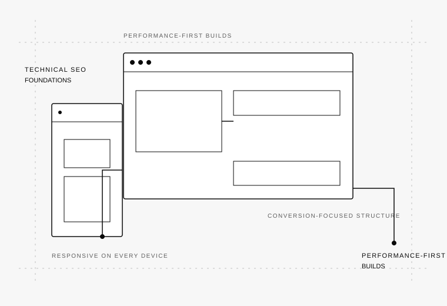

Business and professional services websites
For firms and practices that win work on trust. A site that presents your expertise clearly, makes your services easy to understand, and gives prospects an obvious way to reach you.
Website Development
CAPSTACK designs and builds fast, secure, custom websites for businesses that need their online presence to do real work: establish credibility, explain what you do, and turn visitors into enquiries.
Based in Chennai, India. Working with clients across India and worldwide.01 / The business problem
Before a prospect calls you, they look you up. In a few seconds they decide whether you seem credible, whether you understand their problem, and whether it is worth getting in touch.
A slow, generic or confusing website quietly loses those conversations. Template sites look like everyone else's. Rushed builds break on phones, load slowly and leave security as an afterthought. Pages that don't explain what you do or what to do next leave visitors with nowhere to go.
We build websites that fix this at the root. Clear structure, sharp messaging, clean engineering, and a site that is ready to grow when your business does.

02 / Capabilities
For firms and practices that win work on trust. A site that presents your expertise clearly, makes your services easy to understand, and gives prospects an obvious way to reach you.
For early-stage teams that need to look credible from day one. A focused site that explains your product, your value and your story, and that you can extend as the company grows.
For campaigns, launches and single offers. Pages built around one goal, with fast loading and a clear path to action.
For businesses whose current site is slow, dated, hard to update or no longer reflects the company. We rebuild the structure, content and code properly, instead of repainting the surface.
For growing businesses with several services, audiences or offerings. A well-organised site architecture so visitors find the right answer quickly and search engines understand your pages.
Need something more than a website, such as a custom product or workflow? See SaaS & Product Development and Workflow Automation.
03 / Why CAPSTACK
Your website gets the same rigour as the products we build.
We are a software engineering company. Your website gets the same rigour as the products we build.
You work directly with the people building your site, with no account-manager layers and no hand-offs that lose detail.
Protection is built into how we work, not sold as an extra.
Ownership terms are confirmed in your project scope and handover, including third-party licences.
Every project is quoted to its actual scope. No bundled extras you don't need, and no vague estimates.
If your needs grow into custom software, integrations or automation, we can build that on the same relationship.
04 / Development Process
We learn your business, audience, goals and what the current site is or is not doing. You get honest feedback on what will make the biggest difference.
We define the site structure, pages and content direction, and agree scope, so everyone knows what is being built.
We design the look, layout and flow of key pages, and refine with your feedback.
We develop the site with clean, tested code, and share progress so you are never guessing where things stand.
We check performance, security, responsiveness and forms before going live, then handle the launch with you.
After launch we remain available for fixes, updates and improvements.
Project duration depends on scope and is confirmed in your proposal.
FAQ
It depends on the number of pages, design depth, features and integrations involved. We quote each project individually after understanding your needs, so you pay for what you actually require.
Timelines depend on scope and how quickly content and feedback come back. We confirm a realistic schedule in your proposal before any work starts.
Yes. What we build for your project is yours. We structure the code cleanly so it can be maintained by us or by another developer.
Yes. We provide support after launch for fixes and updates.
Yes. We review what you have, identify what is holding it back, and rebuild structure, design and code where needed.
Security is part of how we build, from the start of the project. No website can be promised to be invulnerable, but we apply sound practices and check before launch rather than treating security as an afterthought.
We build in the SEO foundations that matter: clean structure, metadata, speed and mobile-readiness. Rankings depend on many factors, including competition and ongoing content, so we do not promise specific positions.
This depends on what suits your business. We will discuss how you want to manage content during planning and recommend the approach that fits.
Yes. We are based in Chennai and work with clients across India and worldwide, collaborating remotely.
A short conversation about your business and goals, plus any existing branding, content or examples you like. We help with the rest.
Yes. We also build SaaS and product MVPs, automate workflows, and connect systems through APIs, so your website can grow into a wider digital platform.
Start a Project
Tell us about your project. We will respond with honest advice and, where it is a good fit, a clear proposal.
Start a Project